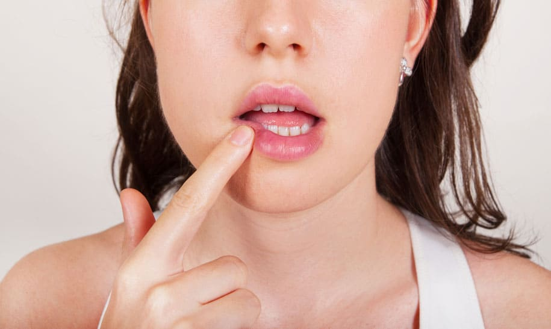
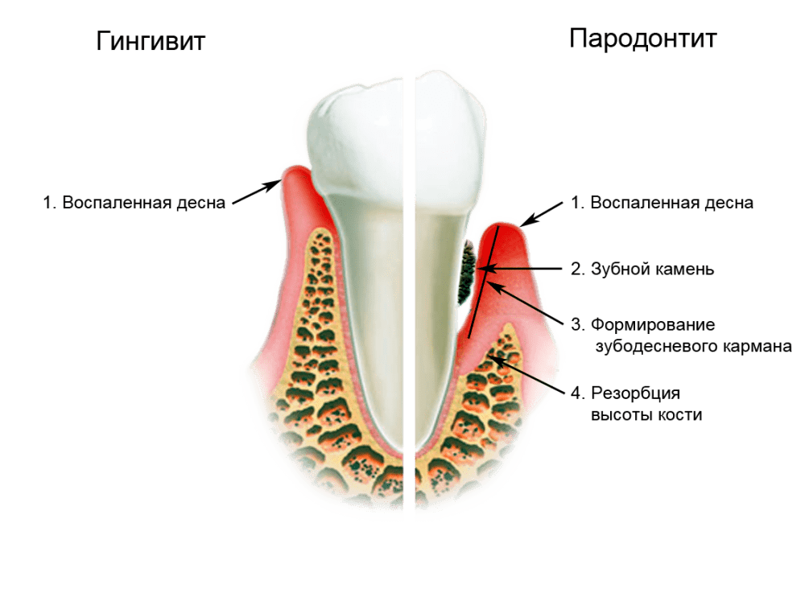
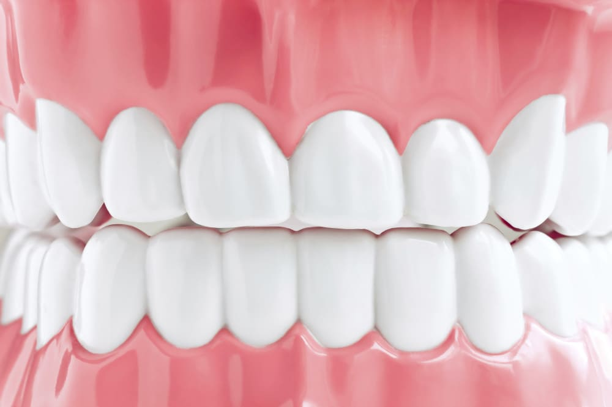
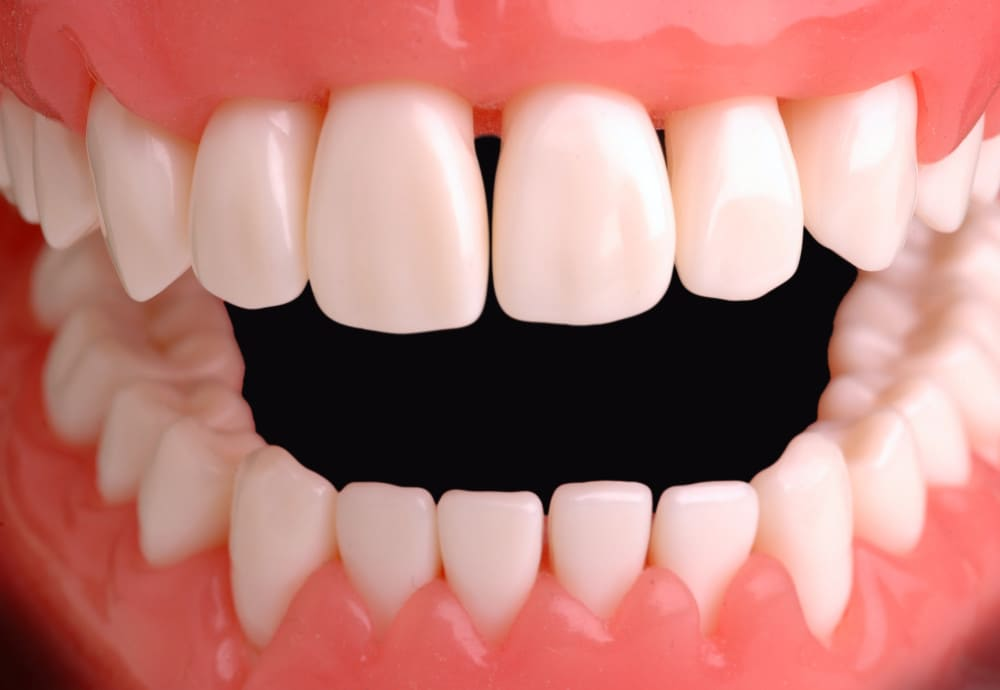
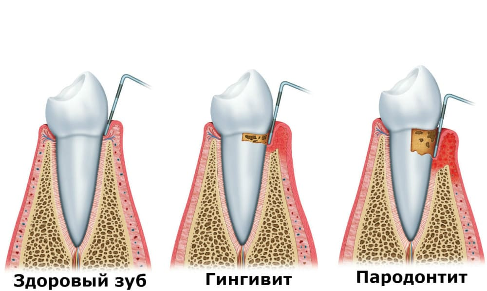
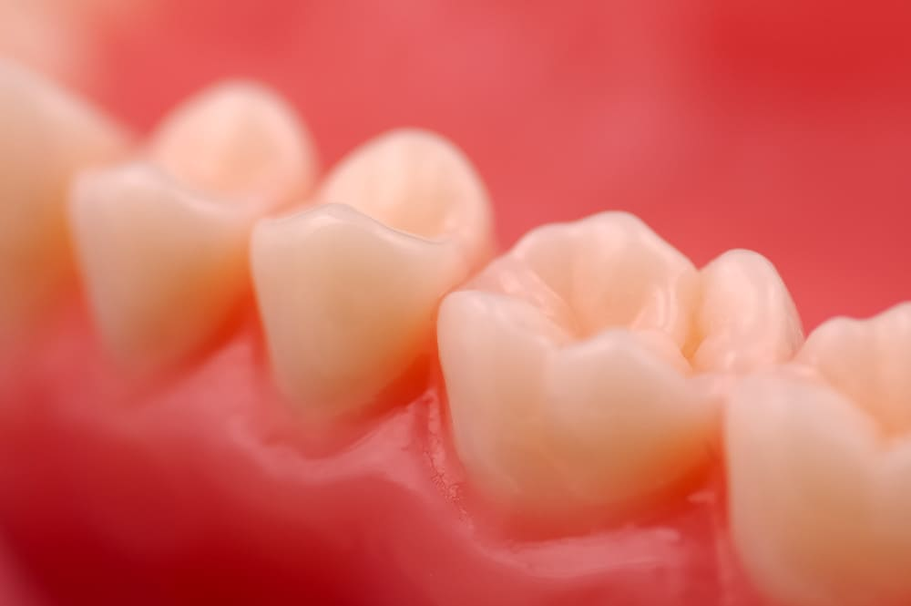
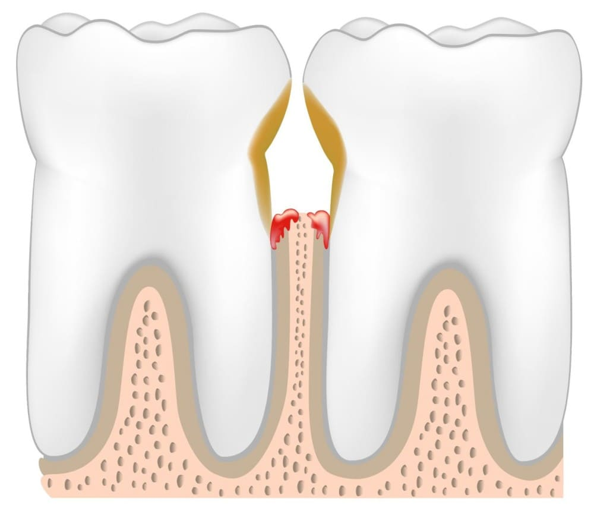
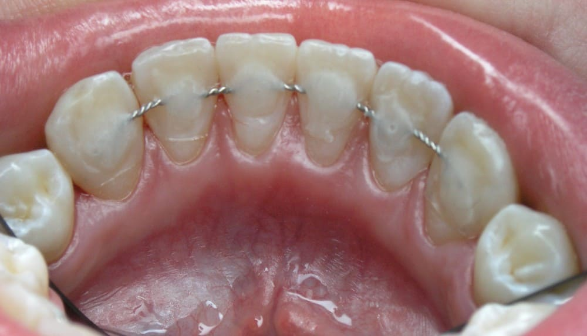

Герпес губ
Герпес губ часто називають «застуда на губах». Всім відоме захворювання багато хто знає, що герпес може бути і більш грізним при іншій локалізації.
Губи - видима частина обличчя. Вони відчувають у мові, співі, соціальних сигналах (вираз радості, зневаги, люті), поцілунках, сексі. Але вони піддаються впливу сонячних променів, перепаду температур, перманентному макіяжу.
У нашій стоматологічній клініці герпес губ успішно лікують, особливо у початковій фазі його появи. Тому, як тільки губа засвербіла — «ноги в руки» і до нас!
Гінгівіт. Причини. Лікування.
Захворювання гігівіту - це запалення ясен без порушення цілісності зубодесневого з'єднання. Лікування гінгівіту не можна відкладати, а найкраще не допускати цього захворювання.
Причини гінгівіту
Викликати гінгівіт може негативний вплив зовнішніх та внутрішніх факторів.
Найчастіше гінгівіт вражає ділянки, які важко піддаються гігієнічним заходам, такі як проміжки між жувальними зубами. Якщо захворювання вражає ясна всієї щелепи або обох щелеп, його називають поширеним, якщо маленький відрізок в одного або кількох зубів - локалізованим.
Зовнішніми причинами гінгівіту є інфекції, травми, опіки, медичні та хімічні фактори, відсутність належної гігієни, куріння. Внутрішні причини гінгівіту стають різні захворювання, такі як нефропатія, хвороби жовчного міхура і печінки, ревматизм, цукровий діабет. У дітей гінгівіт може виникати через несформовану місцеву імунну систему.
Ознаки
За зовнішніми проявами виділяються гострий та хронічний гінгівіт, симптоми якого різні. При гострій формі захворювання спостерігаються болючість, порушення функції ясен, набряк, місцеве підвищення температури, почервоніння, кровоточивість. При хронічному випадку захворювання запалення не так яскраво. Тканини ясен розростаються, внаслідок чого ними покривається коронка зуба
Лікування
Якщо у вас виявили гінгівіт, лікування його не можна відкладати у довгу скриньку. За зовнішніми ознаками захворювання поділяється на такі форми:
• виразкову;
• катаральну;
• гіпертрофічний.
Будь-яка з форм захворювання потребує негайного лікування. Перший тип гінгівіту є найпоширенішим, він характеризується:
• почервонінням;
• невеликим набряком ясен;
• наявністю твердих та м'яких зубних відкладень.
Гіпертрофічний гінгівіт часто розвивається через зміни в ендокринній системі, ним страждають:
• підлітки;
• вагітні жінки;
• люди з цукровим діабетом.
Симптоми захворювання:
гноетечія;
• кровоточивість;
• зубні відкладення;
• неприємний запах із рота.
Виразковий гінгівіт характеризується такими особливостями:
• кровоточивістю;
• некрозом міжзубних сосочків;
• запаленням слизової оболонки.
Захворювання може супроводжувати такі порушення:
• грип;
• ГРЗ;
• ангіна;
• туберкульоз;
• хвороби крові.
При лікуванні в стоматологічній клініці «Імперіал» використовуються різні методи, залежно від форми та тяжкості гінгівіту. При перших проявах патології можна вирішити проблему професійним чищенням, складніші випадки вимагають хірургічного втручання. Наші фахівці розробляють схеми лікування індивідуально для кожного пацієнта, щоб усунути проблему швидко та якісно.
Лікування ясен
Лікування ясен може бути консервативним та хірургічним, залежно від стадії ураження тканин. Чим раніше ви звернетеся до лікаря, тим більше шансів зберегти зуби, запобігти негативним наслідкам пародонтиту і витратити менше часу на усунення проблем.
Рання стадія
Лікування ясен найкраще починати на ранній стадії, коли спостерігається тільки поверхневе запалення. У цей момент вся процедура може звестися до ультразвукового чи механічного чищення зубних відкладень, які є причиною появи запального процесу, полірування поверхні зуба, обробки коронки та кореня щітками з фторвмісним лаком, а також до промивання кишень за допомогою спеціальних лікарських засобів. Все це миттєво дає лікувальний ефект та симптоми пародонтиту зникають.
Середня тяжість
На жаль, у більшості випадків нашим стоматологам доводиться мати справу з пародонтитом середньої тяжкості, коли вже є такі симптоми як неприємний запах з рота, значна рухливість зубів і дуже сильна кровоточивість ясен. У цьому випадку процес лікування ясен значно складніший. Найсучаснішим способом є кюретаж пародонтальних кишень, який проводиться за допомогою місцевої анестезії. Під час процедури проводиться полірування поверхні кореня зуба та видаляються інфіковані тканини. Вона може виконуватися за двома методиками:
• закритий кюретаж - видалення зубних відкладень за допомогою спеціальних крбчків (кюреток);
• відкритий кюретаж - хірургічна операція, під час якої розрізається деска або знімається її верхня частина, а потім пришивається на місце.
Лікування ясен необхідно проводити своєчасно. Якщо пацієнт його не почне, надалі пародонтит переростає в стадію тяжкого ступеня, коли вже ніяк не вийде обійтися консервативним лікуванням, і доведеться вдатися до хірургічних методів. Під час операції необхідно буде видалити найбільш уражені захворюванням зуби, а також зробити відкритий кюретаж кишень. Паралельно з цим застосовують різні остеогенні препарати, які дозволять зміцнити кістку і створити умови для її відновлення в тих місцях, де це ще можливо. Навіть якщо зуби виглядають здоровими, це не означає, що захворювання ясен немає. Тільки стоматолог та лікар гігієніст за допомогою простого дослідження може визначити відсутність порушень у галузі пародонту. Чим раніше починається лікування, тим сприятливіший прогноз, а результат не змусить себе чекати – свіже дихання, гарна усмішка та гарний настрій.
Сучасна стоматологія «Імперал» є однією з найкращих у Києві. Ми спеціалізуємося на різних методиках лікування ясен, використовуємо для цього лише найкраще обладнання та матеріали. Ви можете відвідати наших фахівців, і отримати кваліфіковану допомогу, яка запобігатиме серйозним ускладненням.
Лікування ясен лазером
За статистикою 86% дорослого та 65% дитячого населення страждає на захворювання ясен і пародонту. Раніше лікування полягало у проведенні професійної гігієни порожнини рота, хірургічному усуненні пародонтальних кишень – відкритому та закритому кюретажі, та медикаментозному лікуванні, яке зводилося до прийому антибактеріальних препаратів. Наразі доступні нові технології, що мають мінімум протипоказань та побічних ефектів, і дають швидкий позитивний результат від терапії.
Особливості лазерного лікування
Прийом антибіотиків спричиняє численні побічні явища, а ефективність їх місцевого застосування недостатня, також препарати викликають звикання. Спільно з антибіотиками необхідно призначати протигрибкові препарати, що також надає небажаний вплив на організм людини. З появою діодного лазера стала реальною можливість уникнути призначення сильнодіючих препаратів з безліччю побічних дій.
Усі світові лідери стоматології вже перейшли до його застосування у своїй клінічній практиці. Лазерна стоматологія – це найпрогресивніший на даний момент напрямок. Лазерне випромінювання має досить широкий спектр на тканини організму людини, зокрема, і тканини порожнини рота. У нашій клініці ми використовуємо діодний лазер з довжиною хвилі 810 нм, що ідеально підходить для лікування ясен та тканин парадонту.
Ключові властивості апарату:
• біостимуляція тканин;
• можливість проводити операції на безкровному полі завдяки сильній коагулюючій дії.
Лазер досить зручно та ефективно використовувати як у хірургічній, так і в терапевтичній пародонтології. Він підходить для лікування дітей, тому що при роботі з ним значно знижено больові відчуття.
Для лікування пародонтиту різного ступеня тяжкості необхідно обробити пародонтальні кишені лазером. Попередньо проводять професійну гігієну ротової порожнини, що займає загалом 25 хвилин, і, якщо потрібно (залежно від тяжкості процесу), роблять повторну обробку через 7 днів.
Вже після першої процедури помітні явні покращення, а через 2 тижні запальний процес буде усунено. Досягається стійкого клінічного результату. Все це має місце завдяки дуже сильній антибактеріальній дії лазера, який запобігає повторному розвитку патології.
Лазерна стоматологія у Києві практикується у клініці «Імперіал». Ми використовуємо якісний лазер, який дозволяє проводити будь-які маніпуляції максимально швидко, з мінімальним травмуванням тканин та максимальним комфортом для пацієнтів.
Пародонтит. Причини. Спосіб лікування.
Пародонтологія - це розділ стоматології, що займається вивченням, діагностикою, профілактикою та лікуванням захворювань ясен, таких як пародонтит, гінгівіт, пародонтоз та ін. Сучасна пародонтологія розрізняє понад 20 захворювань ясен, у тому числі найбільш поширені пародонтит, парадонтоз і гінгівіт.
Пародонтит
Парадонтит є одним із найпоширеніших захворювань, яке зустрічається в наш час у стоматології. Через саме цю патологію пацієнти зрілого віку найчастіше втрачають зуби. Пародонтит раннього ступеня називають гінгівітом. Розглянемо, чим поняття відрізняються один від одного.
Гінгівіт – це запалення ясен. У початковій стадії захворювання супроводжується болем та кровоточивістю або протікає зовсім безсимптомно. Якщо його не виявити вчасно, починає розвиватися пародонтит, який складніше лікувати.
Пародонтит – захворювання, головна небезпека якого полягає у запаленні не тільки ясен, а й усіх тканин, які фіксують зуби у кістки. Запалення може прогресувати у руйнування зубодесневого з'єднання та кісткової тканини альвеолярного відростка. Результат цих процесів один – втрата зубів, іноді і цілком здорових.
Пародонтит може спричинити і більш серйозні наслідки, такі, як підвищення рівня цукру в крові. Порушення в діяльності організму, пов'язані з ним, здатні також викликати ризик інсульту та інфаркту. Для вагітних жінок такі порушення особливо небезпечні. Запідозривши симптоми пародонтиту, лікування слід розпочинати негайно, це допоможе запобігти появі ускладнень.
Розвиток пародонтиту починається із покриття зубів невидимою бактеріальною плівкою. Це відбувається внаслідок недотримання гігієни. Плівка утворюється щодня, тому зуби необхідно чистити щонайменше двічі на добу. В іншому випадку, плівка твердне і перетворюється на зубний камінь. Чим більше у вас нальоту та зубного каменю, тим сильніше бактерії роз'їдають зуби та ясна. Розмноження мікроорганізмів викликає подразнення та запалення ясен – гінгівіт. Далі між зубами і ясен утворюються порожнини, що наповнюються бактеріями. Весь цей процес зрештою призводить до пародонтиту.
Ознаки пародонтиту:
• розхитування зубів;
• кровоточивість ясен;
• неприємний запах із рота;
• підвищена чутливість ясен;
• порушення смакових відчуттів;
• больові відчуття в ділянці ясен;
• гнійні виділення між зубами та яснами;
Залежно від індивідуальної переносимості, в окремих випадках у хворого спостерігається підвищена температура та сильні болючі відчуття. Пародонтит може розвиватися стрімко, так само швидко руйнуючи зуби та ясна. Іноді захворювання проходить періодично, то посилюючи, то послаблюючи свої прояви.
Причини пародонтиту
Головна причина пародонтиту – застій крові у тканинах пародонту. Такий процес може виникнути внаслідок відсутності необхідного навантаження на щелепний суглоб. Застій крові сприяє розвитку та поширенню інфекції та зубного каменю. В результаті організм втрачає можливість постачати імунні клітини місця, уражені інфекцією.
Інші причини:
вагітність;
захворювання ШКТ;
шкідливі звички (зловживання алкоголем, куріння, наркотична залежність);
відсутність якісної регулярної гігієни ротової порожнини; травматичне проведення стоматологічних операцій.
Різновиди захворювання:
1. Хронічний пародонтит. Характеризується сильною кровоточивістю ясен, больовими відчуттями, усуненням зубів, їх рухливістю, неприємним запахом з рота. Головним завданням перед лікарем стає очищення пародонтальних кишень, що утворилися. Без хірургічного втручання тут, зазвичай, не обійтися. Тобто, якщо у вас хронічний пародонтит, лікування народними засобами неможливе
2. Генералізований пародонтит. Є ускладненням гінгівіту та характеризується утворенням глибокої пародонтальної кишені, руйнуванням кісткової тканини та зубозв'язувального апарату. Симптоми можуть бути: кровоточивість, біль, розхитування зубів, виділення гною. Залежно від ступеня тяжкості патології підбирається рівень складності майбутнього лікування. На це впливають такі показники: глибина кишені, рухливість зубів, стадія розсмоктування кісткової тканини.
Як лікувати пародонтит?
Лікування пародонтиту починається з повного стоматологічного обстеження та постановки діагнозу. Лікар вивчає ступінь кровоточивості ясен, глибину кишень, кількість нальоту та зубного каменю. Може знадобитися консультація з іншими фахівцями, оскільки захворювання торкається не тільки ротової порожнини, а й всього організму.
Перший етап лікування пародонтиту – очищення ясна та кореня зуба, видалення зубного нальоту та зубного каменю. Після цих маніпуляцій рухливі зуби зміцнюються, які поверхню стає гладкою. Через 1-2 місяці стоматолог повторно оглядає ротову порожнину та приступає до корекції прикусу. У разі, якщо кишені ще не загоїлися, призначається хірургічне лікування.
На сьогоднішній день найбільш ефективним є лікування пародонтоа лазером. Цей метод дозволив зробити захворювання ясен повністю виліковним. Вже після першого сеансу кровоточивість та біль при жуванні помітно слабшають. Суть технології полягає в тому, що лазер проникає в недоступні при механічному чищенні зубів місця і знищує всі мікроорганізми. Лікування пародонтиту лазером абсолютно безболісне. До речі, багато інших захворювань, наприклад, кіста, ефективно знищуються таким же способом, що дозволяє зберегти зуби цілими та здоровими.
Засоби лікування пародонтиту, лікарські препарати та їхнє правильне використання є дуже важливим етапом. Лікар після заключного обстеження призначить вам графік відвідування. Як правило, вони не перевищують один раз на три місяці. У будь-якому випадку вилікувати патологію вам вдасться тільки в умовах стоматологічної клініки. Вчасно приходьте на профілактичні огляди, щоб уникнути серйозних наслідків пародонтиту.
Отримати кваліфіковану допомогу в лікуванні пародонтиту ви можете, записавшись на прийом до клініки Імперіал.
Пародонтоз. Причини. Спосіб лікування.
Пародонтоз - це системне ураження навколозубної тканини. Назва захворювання походить від грецького odóntos - родовий відмінок слова "зуб". Його часто плутають із пародонтитом, проте ознаки двох цих захворювань різняться. При пародонтиті спостерігається запальний процес, рання рухливість зубів, утворення патологічних кишень і скупчення гною. Хворий скаржиться на набряк ясен та біль, пульсацію, рухливість зубів. Причиною пародонтозу стають мікроби, що впливають на зубні тканини та викликають запалення. Хворобу можна попередити при регулярному видаленні зубних каменів та професійному чищенні зубів.
Симптоми пародонтозу
У захворювання на пародонтоз симптоми такі: оголення зубних шийок та їх підвищена чутливість через руйнування кісткової тканини, відсутність ясенних кишень та виділення гною, стертість емалі, наявність невеликих зубних відкладень. Колір ясна блідо-рожевий, процес проходить без запалення, зуби довгий час нерухомі, проте при прогресуванні захворювання можуть бути втрачені.
На жаль, вченим досі не вдається з'ясувати основні причини захворювання, на які страждають як у юному, так і в дорослому віці. Налічується безліч факторів, що сприяють виникненню та розвитку пародонтозу. Виділити серед них можна такі:
• цукровий діабет;
• порушене кровопостачання ясен;
• порушене харчування тканин, що оточують зуби.
Також це можуть бути гіпертонія, неправильний прикус, аномалія становища зубів, вегетосудинна дистонія. Певну роль грають спадковий та мікробний фактори.
Лікування пародонтозу
При діагностиці та лікуванні пародонтозу виділяються три стадії: легка, середня, важка. Залежно від ступеня тяжкості та індивідуальних особливостей пацієнта розробляється комплекс заходів щодо боротьби із захворюванням. Вони бувають:
Фізиотерапевтичні: лазерний фотофорез, лазеротерапія. Спрямовані на поліпшення та активізацію кровообігу в тканинах ясен та активно борються з мікробами.
• хірургічні: операції з підсадки та нарощування кісткової тканини, яка зможе «утримувати» зуби, очищення чи видалення пародонтальних кишень.
• ортопедичні: установка відповідних конструкцій, таких як протези, коронки та мости. Це замінить Вам втрачені зуби та посилить фіксацію збережених.
• терапевтичні: лікування карієсу, видалення зубних відкладень.
Комплексний підхід
Методи лікування пародонтозу мають комплексний характер. Необхідно зупинити процес, доки він не дійшов до стадії незворотності. У стоматологічній клініці «Імпераїл» лікар намагається зберегти зуби та покращити якість функціонування всієї зубощелепної системи. Паралельно з іншими методами пацієнту призначається курс та засоби для лікування пародонтозу, що включає вітамінотерапію та при необхідності прийом гормональних препаратів. Також при лікуванні та профілактиці захворювання зубна паста надає ефективний вплив на стан ясен. Її склад збалансований таким чином, що дозволяє активно боротися із запаленням та кровоточивістю. До зубної пасти для профілактики захворювання входять екстракти лікувальних трав, мінерали, антибактеріальні компоненти. Звернутися до наших фахівців ви можете, відвідавши стоматологію
Шинування зубів. Показання. Ефективність.
Шинування зубів – один із методів лікування захворювань ясен, що дозволяє знизити ймовірність випадання чи видалення зубів. Основним показанням процедури є патологічна рухливість зубів. Також вона рекомендується для запобігання повторному запаленню в тканинах пародонту після лікування, за наявності хронічного пародонтиту.
Особливості конструкцій
Шини можуть бути знімними та незнімними. Знімні шини встановлюються за відсутності деяких зубів, створюють хороші умови для гігієни ротової порожнини, проведення при необхідності терапії та хірургічного лікування.
До переваг незнімних шин відносять профілактику перевантажень пародонту в будь-якому напрямку впливу, чого не дають знімні протези. Вибір типу шини залежить від безлічі параметрів і без знання патогенезу захворювання, а також біомеханічних принципів шинування, ефективність шинування буде мінімальною.
Показання до шинування:
особливості захворювання пародонту;
кровоточивість ясен, рухливість зубів;
гігієна ротової порожнини; наявність зубних відкладень;
виражені зубодесневые кишені та високий рівень оголеності коренів;
особливості розташування зубів, ступінь їх усунення (деформація зубного ряду).
Для аналізу цих параметрів застосовують дані рентгенографії та інших додаткових методів дослідження. При початковій стадії захворювання пародонту та відсутності виражених уражень (дистрофії) тканин можна обійтися без шинування.
Ефект від шинування
До позитивних ефектів шинування відносять такі моменти: Шина зменшує рухливість зубів. Жорсткість конструкції шини не дає зубам розхитуватися, а значить, зменшує ймовірність подальшого збільшення амплітуди коливань зубів та їх випадання. Тобто. зуби можуть рухатись лише настільки, наскільки це дозволяє шина. Ефективність конструкції залежить кількості зубів. Чим їх більше, тим вищий ефект від шинування.
Шинування перерозподіляє механічне навантаження. Основне навантаження при жуванні буде припадати на здорові зуби, а розхитані будуть менш схильні до впливу на них, що дає додатковий ефект для загоєння. Чим більше здорових зубів буде включено в шинування, тим більшою буде розвантаження рухомих зубів. Отже, якщо більшість зубів у роті рухливі, ефективність роботи шини знижується.
Найкращі результати дає шинування передніх зубів (різці та ікла), а найкращими шинами будуть ті, які поєднують найбільшу кількість зубів. Отже, в ідеальному варіанті шина повинна торкатися всього зубного ряду. Пояснення досить просте — з погляду стійкості саме арочна конструкція буде кращою за лінійну. В силу меншої стійкості лінійної конструкції, шинування рухомих корінних зубів виробляють симетрично з двох сторін, поєднуючи їх місточком, що з'єднує ці два майже лінійних ряди. Така конструкція значно збільшує шинуючий ефект. Інші можливі варіанти шинування розглядаються залежно від особливостей захворювання.